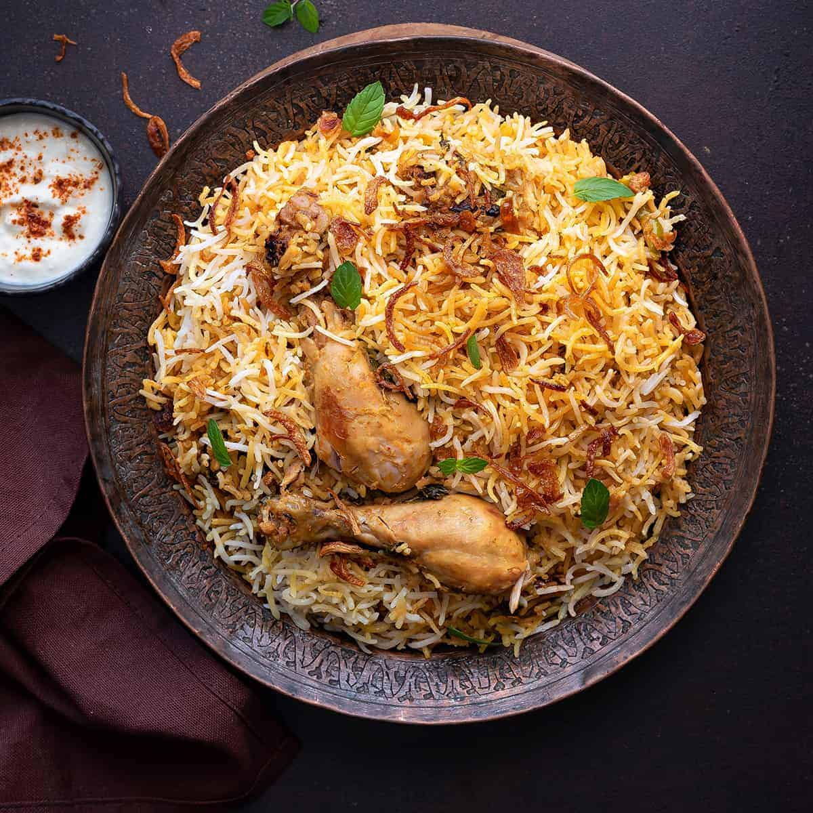

Chicken biryani is a popular South Asian rice dish known for its rich aroma, flavorful spices, tender chicken, and delicious combination of textures. To prepare it, begin by marinating chicken pieces with yogurt, ginger-garlic paste, red chili powder, turmeric, coriander powder, cumin, garam masala, salt, and a little lemon juice. Allow the chicken to marinate for at least 30 minutes so that the spices penetrate the meat. Meanwhile, wash and soak basmati rice for approximately 20–30 minutes. Heat oil or ghee in a large pot, fry sliced onions until golden brown, and add whole spices such as cinnamon, cardamom, cloves, and bay leaves. Add the marinated chicken and cook until it becomes tender and develops a rich, flavorful gravy. Next, partially cook the soaked rice in boiling water with salt and a few whole spices until it is approximately 70–80% cooked. Drain the rice and layer it over the cooked chicken in the pot. Add fried onions, chopped coriander and mint leaves, saffron-infused milk or food-grade biryani color, and a little ghee to enhance the aroma and taste. Cover the pot tightly with a lid and cook on low heat for approximately 20–25 minutes using the *dum* cooking technique, which allows the steam to finish cooking the rice while blending the flavors of the chicken and spices. Once fully cooked, gently mix the layers and serve the hot chicken biryani with cucumber raita, fresh salad, or a boiled egg.